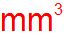
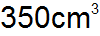
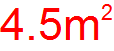

6.4
8.1 math-utils -funktiot
procedure
(units->image yksikkö eksponentti fontin-koko väri) → kuva yksikkö : merkkijono eksponentti : kokonaisluku fontin-koko : kokonaisluku-välillä-0-255 väri : image-color?
Tuottaa kuvan, jossa yksikkö ja sen eksponentti esitetään fontin-koko:isina sekä väri:sinä.
(units->image "mm" 3 33 "red")

procedure
(quantity->image lukuarvo yksikkö yksikön-eksponentti fontin-koko väri) → kuva lukuarvo : luku yksikkö : merkkijono yksikön-eksponentti : luku fontin-koko : kokonaisluku-välillä-0-255 väri : image-color?
Tuottaa kuvan, jossa lukuarvo ja yksikkö eksponentteineen esitetään fontin-koko:isina sekä väri:sinä.
Yksikkö annetaan merkkijonona (esim. "m") ja yksikön-eksponentti lukuna.
Jos yksikön-eksponentti on 1, sitä ei merkitä näkyviin.
(quantity->image 350 "cm" 3 30 "black")

(quantity->image 4.5 "m" 2 45 "red")

procedure
(quantity-str->image suure fontin-koko väri) → kuva
suure : merkkijono fontin-koko : kokonaisluku-välillä-0-255 väri : image-color?
Tuottaa kuvan, jossa suure:een lukuarvo ja yksikkö esitetään fontin-koko:isina sekä väri:sinä.
Suure annetaan merkkijonona, jossa suureen lukuarvo erotetaan välilyönnillä yksiköstä esim. 2 kuutiosenttimetriä ilmoitetaan "2 cm3".
(quantity-str->image "350 cm3" 30 "black")
(quantity-str->image "4.5 m2" 45 "red")
procedure
(round-to-integer x) → kokonaisluku
x : luku
Pyöristää x:n lähimpään kokonaislukuun niin, että puoliväliin jäävät positiiviset luvut (esim. 0.5) pyöristetään suurempaan
kokonaislukuun ja puoliväliin jäävät negatiiviset luvut (esim. -0.5) pyöristetään pienempään kokonaislukuun.
> (round-to-integer 4.3) 4
> (round-to-integer 5.5) 6
> (round-to-integer -3.4) -3
> (round-to-integer -3.5) -4
procedure
(round-to-decimal x desimaalit) → luku
x : luku desimaalit : luonnollinen-luku
> (round-to-decimal 4.344 2) #i4.34
> (round-to-decimal 5.57 1) #i5.6
> (round-to-decimal -3.45 1) #i-3.5
> (round-to-decimal -3.55 1) #i-3.6